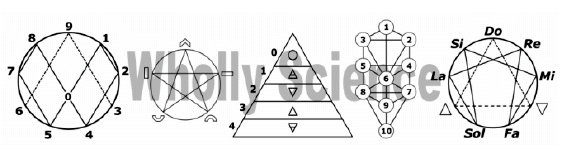

Home
Vergangene Veranstaltung
28.09. - 30.09.2018 in 56410 Montabaur, Richard-Schirrmann-Straße
(Westerwald-Jugendherberge)
Dr. Johan Oldenkamp war Professor für Wissenstransfer, Innovation und Entrepreneurship an der Universität Stenden in Holland. Seit 2008 widmet er sich nur noch der Entwicklung einer Universal-Wissenschaft, die er unter dem Begriff Wholly Science zusammenfasst.
Eine ausführliche Vorstellung von Johan Oldenkamp finden Sie hier pateo.nl/HTML/DE/Ueber.htm
Dipl.-Phys. Gabi Müller will im interaktiven Gedankenaustausch mit Johan Oldenkamp ihr Wirbelweltbild weiter verbessern und ausbauen. viva-vortex.de
Christa Laib-Jasinski ist durch die Veröffentlichung der Tagebücher ihres verstorbenen Mannes, Alfons Jasinski, bekannt geworden, der mit Zivilisationen im Inneren der Erde und auf anderen Planeten physischen Kontakt hatte.
gartenweden-verlag.de
Ingrid Schröder übernimmt an diesem Wochenende wieder die Moderation und Zusammenfassung der vorgetragenen Themen.
isis-schule.de
Programm (als Flyer, Fotos siehe ganz unten):
|

Tagung Ganzheitliche Wissenschaft 1
mit Dr. Johan Oldenkamp:
Einführung in dessen Wholly Science
und mit
Christa Laib-Jasinski: Neues aus Innererde
==================================
Freitag, 28.09.2018 (Einlass ab 17 Uhr)
==================================
18:00 bis 19:00 Uhr gemeinsames Abendessen zum Kennenlernen
19:00 bis 21:00 Uhr Ingrid Schröder: Kurzwiederholung zum Wirbelweltbild von Gabi Müller (nach aktuellem, erweiterten Stand)
Anschließend Diskussionsrunde mit Gabi Müller und den anderen Referenten bis ca. 22 Uhr, aufgelockert durch Musik, Gesang, Tanz
==================================
Samstag, 29.09.2018 (Einlass für neu Eintreffende ab 8:45 Uhr)
==================================
9:30 bis 10:30 Uhr Dr. Johan Oldenkamp:
Weltanschauung – Auf dem Weg zu einem heilenden Paradigma, um alles zu verstehen
11:00 bis 12:00 Uhr Dr. Johan Oldenkamp:
Metaphysik – Über den Schleier hinaus gehen
12:00 bis 13:30 Uhr gemeinsames Mittagessen
13:30 bis 14:30 Uhr Dr. Johan Oldenkamp:
Energetik – Erklärung der dynamischen Grundlagen
15:00 bis 16:00 Uhr Dr. Johan Oldenkamp:
Bewusstsein – Über die Natur des Erlebens
16:30 bis 17:30 Uhr Dr. Johan Oldenkamp:
Physik – Hin zu einem dogmafreien Verständnis physikalischer Phänomene
17:30 bis 18:00 Uhr Dr. Johan Oldenkamp:
Zusammenfassung des Tagesthemas
18:00 bis 19:30 Uhr gemeinsames Abendessen
19:30 bis 21:30 Uhr
Diskussionsrunde und Gedankenaustausch, aufgelockert durch Musik, Gesang, Tanz
==================================
Sonntag, 30.09.2018
==================================
9:30 bis 10:30 Uhr Christa Laib-Jasinski:
Botschaften aus der Innererde - Kurzüberblick über die Ereignisse in den Büchern 1-3 und Aufgreifen von Themen aus den Büchern 4 bis 7 (letztes noch unveröffentlicht), die für die Gegenwart bzw. unsere nähere Zukunft besonders wichtig sind
11:00 bis 12:00 Uhr Christa Laib-Jasinski:
Fortsetzung des Vortrags über Botschaften aus der Inner-Erde
12:00 bis 13:30 Uhr gemeinsames Mittagessen
13:30 bis 14:30 Uhr Ingrid Schröder:
Zusammenfassung der Themen des gesamten Wochenendes und Fragebeantwortung durch die Referenten
15:00 bis 16:00 Uhr Abschlussrunde mit Rückmeldung aller Teilnehmer und musikalischem Ausklang
Wir beginnen morgens jeweils pünktlich zu den angegebenen Zeiten.
Der Rest ist nur grob geplant und kann sich zeitlich aus dem Fluss des Geschehens heraus ändern.
Nur die Essenszeiten müssen wir aus Rücksicht auf die Jugendherberge in etwa einhalten.
Die Teilnahme an dieser geschlossenen Veranstaltung* des Vereins "Perlenschnur" erfolgt
gegen eine Teilnahmegebühr:
Teilnahme an allen 3 Tagen: pro Person Euro 130,-- *)
Teilnahme nur am Samstag: pro Person Euro 100,--
Teilnahme nur am Sonntag: pro Person Euro 50,--
Kostenlose Stornierung der vorausgezahlten Teilnahmegebühren, jedoch bei Zimmerbuchung ab 1 Tag vor Beginn ohne Rückerstattung
der Zimmerkosten, wenn kein Ersatzbucher gefunden wird.
Interessenten, die kein oder nur ein geringes Einkommen haben (wie z.B. Schüler, Studenten,...) können sich
wegen eines Sonderpreises an uns wenden.
*) Die Vollzeit-Teilnehmer erhalten mit erfolgreicher Anmeldung eine viermonatige Gastmitgliedschaft im Verein "Perlenschnur".
Sie können zur nächsten Veranstaltung 50% Rabatt beanspruchen. Tagesteilnehmer bekommen nur eine Tagesmitgliedschaft.
Die Kosten der Getränke und Mahlzeiten (etwa bei Vollpension) und die Übernachtungskosten haben die Teilnehmern zusätzlich zur Teilnahmegebühr zu tragen.
Über den Verein können einige Zimmer bzw. Betten bestellt werden, da eine Vorreservierung erforderlich war.
Veranstaltungsort:
Westerwald-Jugendherberge in 56410 Montabaur, Richard-Schirrmann-Straße
https://www.diejugendherbergen.de/jugendherbergen/montabaur/portrait/
Zur Anreise ohne Auto: Vom Bahnhof ca. 30 min. Fußmarsch, Taxikosten ca. 5 EUR. Mitfahrbörse im Forum Zauberspiegel für jeden selbst organisierbar.
Die Anzahl der Plätze in dieser Veranstaltung ist begrenzt, es empfiehlt sich daher eine frühzeitige Anmeldung.
Anmeldung ohne Zimmerbuchung formlos per E-Mail an: office@perlenschnur.org
mit mindestens Emailadresse und möglichst Telefon, sowie Angabe für welche(n) Tag(e) die Anmeldung erfolgt und für wie viele Personen
Anmeldung mit Zimmerbuchung
mit Name(n), Anschrift, Email und Telefon
voraussichtlich nur mit Vollpension (Freitag Abendbrot bis Sonntag Mittagessen), ob in Doppel- (34,50 mit Vollp. pro Person+Nacht), Einzel- (41,50 mit Vollp. pro Person+Nacht) oder 4-Bett-Zimmer (30,50 mit Vollp. pro Person+Nacht). Zimmervergabe nach Verfügbarkeit.
Verpflichtende Anzahlung von 50% für Teilnehmer mit Zimmerbuchung nach Erhalt der Anmeldebestätigung.
Freiwillige Vorabüberweisung von 100% der Teilnahmegebühr erwünscht, um die Einlasszeit zu verkürzen. Spenden ebenso willkommen.
Die Reservierung UND Zimmer-Bezahlung erfolgt diesmal über den Verein.
Die Übernachtung in anderen Beherbergungsbetrieben der Region haben sich die Teilnehmer selbst zu organisieren.
Hinweise der Jugendherberge:
Ihre Bettwäsche ist im Preis enthalten. Auf Wunsch erhalten Sie Duschtücher für die Dauer Ihres Aufenthaltes für einen geringen Aufpreis von 1,00 € pro Duschtuch.
Ihre gebuchten Zimmer stehen Ihnen am Anreisetag ab 14:00 Uhr, am Abreisetag bis 9:30 Uhr zur Verfügung.
Bitte berücksichtigen Sie für Ihre Planung Ihre Essenszeiten:
Frühstück von 7:30 - 9:30 Uhr
Mittagessen von 12:00 - 13:30 Uhr
Abendessen von 18:00 - 19:30 Uhr
Fürs gemütliche Beisammensein steht Ihnen auch unser Bistro mit leckeren Speisen und Getränken zur Verfügung.
|
Hier eintragen in den Newsletter von perlenschnur.org und viva-vortex.de
Home
| Termine
| Videos
| Links
| Impressum
| Datenschutz
|